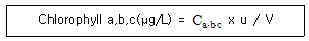
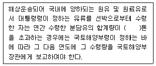

해양환경기사 (2008-05-11 기출문제)
1과목: 해양학개론
1. 에크만 취송류 모델에서 마찰영향심도(frictional depth)는?
- 위도에 관계없으며 풍속이 커지면 증가한다.
- 풍속에 관계없으며 위도가 증가하면 감소한다.
- 같은 풍속이면 위도에 따라 증가한다.
- 풍속이 증가하면 증가하며, 위도가 증가하면 감소한다.
(정답률: 84%)

2. 해양의 표층해류 중 서안경계해류(western boundary current)가 아닌 것은?
- 쿠로시오
- 멕시코만류
- 캘리포니아 해류
- 동오스트레일리아 해류
(정답률: 73%)
3. 지형류란 어떤 힘들이 서로 평형을 이룰 때 나타나는 해류인가?
- 압력경도력과 코리올리힘
- 압력경도력과 바람응력
- 바람응력과 코리올리힘
- 가속력과 코리올리힘
(정답률: 87%)
4. 다음 중 방사성핵종의 붕괴 방정식으로 맞는 것은? (단. A는 시간 t 경과 후 방사능 농도, Ao는 초기의 방사능 농도, λ는 붕괴상수, t는 시간이다.)
- A = Ao X ln(-λt)
- Ao = A X ln(-λt)
- Ao = Ae-λt
- A = Aoe-λt
(정답률: 90%)
5. 내부파 중에서 가상적인 영향에 의하여 생기는 반일주기의 파는?
- 내부조석파
- 내부관성파
- 자유내부파
- 심층내부파
(정답률: 70%)
6. 퇴적물의 평균입도가 동일할 경우, 퇴적물의 분급과 공극률의 관계 중 맞는 것은?
- 분급이 좋을수록 공극률이 작다.
- 분급이 좋을수록 공극률이 크다.
- 분급과 공극률 간에는 관계가 없다.
- 평균입도는 분급 및 공극률에 영향을 미치지 않는다.
(정답률: 78%)
7. 다음 중 침강입자를 모으는 용기로서 가장 적합한 것은?
- 세디먼트 트랩(Sediment trap)
- 미릴포어 필터(Millipore filter)
- 반돈(Van Dorn) 채수기
- 무오염 채수기
(정답률: 86%)
8. 북반구에 존재하는 동안류와 서안류에 대한 설명 중 틀린 것은?
- 동안류는 폭이 넓고 서안류는 폭이 좋다.
- 해류층의 두께가 동안류는 앏고 서안류는 두껍다.
- 동안류는 편서풍대에서 흘러오며, 저온, 저염분이고 서안류는 무역풍대에서 흘러오면 고온, 고염분이다.
- 연안류와의 경계가 모두 분명하다.
(정답률: 87%)
9. 해저 열수광상이 가장 많은 해역은?
- 대서양
- 태평양
- 인도양
- 지중해
(정답률: 76%)
10. 해양 지형을 분류할 때 육지의 융기 또는 해면의 저하에 의하여 새로운 육지로 형성된 해안은?
- 침수해안
- 이수해안
- 중성해안
- 합성해안
(정답률: 80%)
11. 생물기원 퇴적물 중 해수에서 직접 침전한 것이 아니라 석회질 퇴적물이 퇴적한 후 속성작용을 받는 동안 Ca 석회질 퇴적물 혹은 공극수 내에 풍부한 Mg으로 치환되어 생성된 것은?
- Aragonite
- Barite
- Calcite
- Dolomite
(정답률: 90%)
12. 해수의 온도차발전(OTEC) 건설의 일반적인 최적지는?
- 저위도 지역
- 중위도지역
- 고위도지역
- 남극지역
(정답률: 80%)
13. 다음 중 열대저기압과 발생지역의 연결이 틀린 것은?
- 태풍(Typhoon) - 북태평양
- 허리케인(Hurricane) - 북대서양
- 사이클론(Cyclone) - 북인도양
- 윌리윌리(Willy-Willies) - 지중해
(정답률: 92%)
14. 대양저로부터 융기한 해산 중에서 그 정상이 편평한 지형은?
- 기요
- 산호초
- 해팽
- 해령
(정답률: 87%)
15. 북반구에서 열대-아열대 해역의 표층 해수 순환 방향은?
- 시계방향의 회전
- 반시계 방향의 회전
- 남북방향의 직선
- 동서방향의 직선
(정답률: 85%)
16. 우리나라 주변해의 수괴 중 가장 온도가 낮은 것은?
- 동해고유수
- 황해저층냉수
- 대마난류수
- 북한한류수
(정답률: 85%)
17. 해양에서 대기로 발산되는 열 중 가장 큰 것은?
- 증발잠열
- 전도열
- 복사열
- 반사열
(정답률: 91%)
18. 반구조운동을 하는 판(plate)의 평균 두께는?
- 100km
- 200km
- 300km
- 400km
(정답률: 75%)
19. 다음 원소 중 해수에서 제거되기 쉬운 순서로 바르게 된 것은?
- Mn > U > Na > Th
- Th > Mn > U > Na
- U > Na > Th > Mn
- Na > Th > Mn > U
(정답률: 75%)
20. 다음 중 일조부등(日潮不等)의 원인은?
- 달의 위치가 하루동안 바뀌기 때문이다.
- 태양의 위치가 하루 동안 조금 바뀌기 때문이다.
- 달의 궤도면과 지구의 적도면이 서로 다르기 때문이다.
- 밤과 낮의 기온차이 때문이다.
(정답률: 88%)
2과목: 해양생태학
21. 성게류가 섭식활동을 할 때 사용하는 기관은?
- 치설(radula)
- 자포(nematocyst)
- 아리스토틀의 등(Aristotle's lantern)
- 촉수(tentacle)
(정답률: 92%)
22. 생태학적 견지에서 볼 때 높은 탁도의 가장 중요한 의미는?
- 동물들의 숨을 막히게 한다.
- 태양광선의 투과를 감소시킨다.
- 여과식자(filter feeder)에게 매우 좋다.
- 포식자로부터 저서동물을 보호하기가 쉽다.
(정답률: 95%)
23. 다음 고래 중 이빨을 가지고 있는 것은?
- 긴수염고래
- 참고래
- 향고래
- 대왕고래
(정답률: 88%)
24. 우리나라 연성 기질의 갯벌 생태계에 서식하는 저서생물군집의 분포를 결정하는 중요한 환경요인과 가장 거리가 먼 것은?
- 조위
- 온도
- 포식
- 저질의 입도
(정답률: 82%)
25. Mare에 의한 중형저서동물의 크기는?
- 그물코 15mm 정도에 걸리는 생물
- 그물코 1.0mm 정도에 걸리는 생물
- 그물코 1.0mm 체를 통과하고 그물코 0.1mm 체에 걸리는 생물
- 그물코 0.1mm 정도에 걸리는 생물
(정답률: 92%)
26. 다음 중 강모(setose)에 의한 퇴적물 섭식자의 대표적 동물군은?
- Macoma balthica(접시조개류)
- Corophium volutator(단각류)
- Arenicola marina(작은검은갯지렁이류)
- Nereis diversicolor(원참갯지렁이류)
(정답률: 79%)
27. 다음 중 일반적으로 영양염류가 풍부하고 치어 성육장으로 가치가 가장 큰 수역은?
- 외해(open sea)
- 강 하류역(estuary)
- 쿠로시오 유역(黑潮)
- 조경(潮境)형성 해역
(정답률: 91%)
28. 해양생물의 독성실험에 대한 설명으로 옳은 것은?
- 48hEC50은 48시간 노출시 실험 생물의 50%가 사망하는 중간 치사시간
- 96hLC50은 96시간 노출시 실험 생물의 50%가 사망하는 독성물질 농도
- 96hLT50은 96시간 노출시 실험 생물의 50%가 사망하는 중간 유효농도
- 48hLD50은 48시간 노출시 실험 생물의 50%가 사망하는데 필요한 유효시간
(정답률: 80%)
29. 다음 중 유독성 적조 생물은?
- 규조류의 스켈레토네마 (Skeletonema)
- 편모조류의 짐노디늄(Gymnodinium)
- 남조류의 트리코데스뮴(Trichodesmium)
- 규조류의 키토세로스(Chaetoceros)
(정답률: 88%)
30. 중형저서 동물들의 분포는 퇴적상에 따라 우점하는 종류가 달리 나타난다. 다음 중 모래가 우세한 퇴적물에서 영구적인 중형저서동물로서 가장 우점한 종류는?
- 저서성 요각류
- 선충류
- 쿠마류
- 패충류
(정답률: 87%)
31. 다음 생물들 중 유기오염역에서 나타나는 대표적인 오염 지시종은?
- Capitella capitata
- Sagitta elegans
- Chaetoceros sp.
- Macoma balthica
(정답률: 81%)
32. 다음 중 해양에 서식하는 해조의 생활 영역을 제한하는 가장 주요한 환경인자는?
- 수온
- 광선
- CO2의 농도
- O2의 농도
(정답률: 81%)
33. 갯벌의 오염 정화기능에 대한 설명 중 틀린 것은?
- 만조 때 외해수로부터 갯벌위로 수송된 식물 플랑크톤을 중심으로 하는 현탁유기물은 여과식성 이매패류를 중심으로 한 저서동물들의 활발한 섭식에 의해 대부분 해수로부터 빠른 속도로 제거된다.
- 갯벌상의 현탁유기물은 대형저서동물을 중심으로 하는 생물체로 전환되고 갯벌에 저장된다.
- 갯벌생물에 의해 유기 현탁물이 제거되고 갯벌에서 얻는 수산업적으로 유용한 종은 어획에 의해 육상으로 운반되므로 결국 빈산소 수괴나 적조 발생의 악순환은 억제된다.
- 탁도의 여과 측면에서 갯벌의 정화기능은 필터피더(filter feeder)보다는 퇴적물 식자의 현존량이 많을수록 잘 발휘된다.
(정답률: 78%)
34. 온대해역에서 여름철에 기초생산이 저하되는 이유가 아닌 것은?
- 수온약층이 생긴다.
- 수온이 높다.
- 광선이 부족하다.
- 표층의 영양염이 고갈된다.
(정답률: 91%)
35. 조위면의 변동에 따라 조간대를 구분할 때 조간대의 범위로 가장 적합한 것은?
- 소조시의 최고 고조선부터 대조시의 최저 저조선까지의 범위
- 평균 고저선부터 평균 저조선까지의 범위
- 대조시의 최고 고조선부터 대조시의 최저 저조선까지의 범위
- 대조시의 최고 고조선부터 소조시의 최저 저조선까지의 범위
(정답률: 72%)
36. 경골어류에 대한 설명으로 옳은 것은?
- 부어류인 연어가 산란을 위하여 해수에서 담수로 이동할 때 주로 암컷에서 형태변화가 일어난다.
- 심해어류는 부레가 매우 발달하여 장과 붙어있다.
- 골화된 골조직 골격을 가지고 있으며 이(이)가 턱뼈에 유합되어있다.
- 판새류가 이에 속하며, 이 분류군에 속하는 어종의 입은 아래쪽으로 열려있고, 피부는 방패비늘로 엎여 있다.
(정답률: 82%)
37. 해수 중의 영양염류의 농도와 식물 플랑크톤의 흡수관계, 즉 해수 중의 영양염류의 농도와 플랑크톤의 성장관계를 나타내는 Michaelis-Menton모델을 바르게 설명한 것은?
- 성장속도는 영양염 농도에 비례하고, 반포화상수(KS)와 영양염 농도를 합한 값에 반비례한다.
- 성장속도는 영양염 농도에 반비례하고, 반포화상수(KS)와 영양염 농도를 합한 값에 비례한다.
- 성장속도는 영양염 농도에 비례하고, 반포화상수(KS)와 영양염 농도를 합한 값에 비례한다.
- 성장속도는 영양염 농도에 반비례하고, 반포화상수(KS)와 영양염 농도를 합한 값에 반비례한다.
(정답률: 71%)
38. 해저에 넓게 분포하고 있는 원양성 침전물은?
- 요각류의 유해
- 유공충류의 유해
- 모악류의 유해
- 단각류의 유해
(정답률: 70%)
39. 다음 생물 중 상부조간대에 주로 서식하는 것은?
- 굴, 군부
- 말미잘, 해면동물
- 불가사리, 지충이
- 조무래기 따개비, 좁쌀무늬 총알고둥
(정답률: 86%)
40. 영양구조에 대한 설명으로 옳은 것은?
- 영양 구조가 복잡할수록 먹이 연쇄가 복잡하다.
- 영양 구조가 복잡할수록 먹이 연쇄가 간단하다.
- 영양구조는 먹이 연쇄와 관련이 없다.
- 영양구조는 해양 생태계에만 있다.
(정답률: 91%)
3과목: 해양계측학
41. 조석자료의 분석에서 잔여차가 특별히 큰 peak값을 보일경우는 무엇을 의미하는가?
- Peak 부근에 주기성이 있다.
- 자료의 신뢰도가 높다.
- 잘못된 자료일 가능성이 크다.
- 단주기 성분의 중첩이 있다.
(정답률: 74%)
42. 거리가 떨어져있는 두 전극을 이용하여 전극 사이의 해수의 흐름의 변화에 따른 전도성 변화를 측정하여 유속을 측정하는 기기는?
- GEK
- XBT
- ADCP
- ARGO float
(정답률: 88%)
43. 겉보기산소소비량(Apparent Oxygen Utilization: AOU)에 대한 설명으로 옳은 것은?
- AOU 값이 클수록 유기물 분해량이 많다.
- AOU 값과 유기물 분해량은 관계가 없다.
- AOU 값이 클수록 인산염의 재생량은 적다.
- AOU 값과 비보존성 인산염의 농도는 반비례한다.
(정답률: 92%)
44. 해저 퇴적물인 점토질 (clay)입자의 크기는?
- 0.2 ~ 0.4mm
- 0.062 ~ 0.2mm
- 0.004 ~ 0.062mm
- 0.004mm 이하
(정답률: 87%)
45. 14C를 이용한 연대 측정과 관련된 설명으로 틀린 것은?
- 14C는 우주선에 의하여 계속 생성된다.
- 공기 중 14C의 농도는 조금씩 변화한다.
- 14C는 베타선을 내며 반감기가 약 5700년이다.
- 14C는 살아있는 식물에 의하여 계속 흡수된다.
(정답률: 77%)
46. 조석 관측에서 양질의 자료로 적절한 분석이 이루어졌을 때 나타나는 현상은?
- 잔여치가 아주 규칙적이며 주기적 oscillation이 있다.
- 잔여치가 아주 규칙적이며 주기적 oscillation이 없다.
- 잔여치가 아주 불규칙적이며 주기적 oscillation이 있다.
- 잔여치가 아주 불규칙적이며 주기적 oscillation이 없다.
(정답률: 78%)
47. 미국 해양기상관측위성인 NOAA 인공위성에 탑재된 수온 감지기의 해상도는 가로, 세로 1.1km이다. 다음 중 NOAA위상 관측시 해양표면온도를 알아낼 수 있는 해역은?
- A섬과 B섬 간의 간격이 3000m인 해역
- A섬과 B섬 간의 간격이 1000m인 해역
- A섬과 B섬 간의 간격이 500m인 해역
- A섬과 B섬 간의 간격이 110m인 해역
(정답률: 67%)
48. 다음 중 해양 - 대기 열 교환에 영향을 미치는 것으로 가장 거리가 먼 것은?
- 바람
- 해면-공기 온도차
- 습도
- 해류
(정답률: 60%)
49. 퇴적물 입도 분석 자료를 정량적으로 분석하기 위해 계산하는 분급도란?
- 분포곡선의 평균 기울기
- 분포곡선의 뾰족한 정도
- 평균값을 중심으로 한 분산 정도
- 평균값을 중심으로 한 대칭성
(정답률: 81%)
50. 미고결 해저 표층 퇴적물을 자연상태 그대로(undisturbed) 채취하는데 가장 좋은 채취 기구는?
- Vibratory corer
- Piston corer
- Grab
- Rotary drilling corer
(정답률: 87%)
51. 위성사진(satellite image)에서 가장 효과적이고 직접적으로 얻을 수 있는 정보는?
- 해면기압
- 심층해류
- 바다표면수온
- 바다표면염분
(정답률: 91%)
52. 다음 중 파장이 가장 긴 전자파는?
- x선
- 자외선
- 가시광선
- 적외선
(정답률: 85%)
53. 다음 중 Lagrange 방법에 해당하는 것은?
- Drift buoy 관측
- ADCP 관측
- GEK 관측
- Current meter 관측
(정답률: 84%)
54. 13.5GHz의 전자파를 매우 짧은 수간 동안 방출하여 그 왕복시간을 측정함으로써 해면의 높이 등을 알아낼 수 있는 위성 탑재장비는?
- TM
- AVHRR
- Altimeter
- MSS
(정답률: 72%)
55. 퇴적물의 조립질 입자의 입도 분석에 사용되는 기기와 가장 거리가 먼 것은?
- 기계식 요동기(Ro-Tap)
- Air-Jet Sieve
- Rapid Sediment Analyzer
- Pycnometer
(정답률: 94%)
56. Stable Oxygen Isotope(18O)에 관한 설명 중 틀린 것은?
- Salinity 가 일정한 환경에서 적용이 용이하다.
- 고대 빙하기 때의 온도를 잘 나타내어 준다.
- 생명체의 영향이 적은 곳에서 적용이 용이하다.
- 빙하기 때는 해수 중 18O함량이 증가한다.
(정답률: 64%)
57. 해양에서 사용하는 단위 중 노트(Knot)는 어떤 단위인가?
- 거리단위
- 시간단위
- 속도단위
- 해리와 동일한 단위
(정답률: 89%)
58. 망간단괴 등 큰 덩어리의 채취에 가장 적합한 것은?
- Dredge
- Corer
- Grab
- Snapper
(정답률: 90%)
59. 수심 3000m 에서의 압력은?
- 약 3기압
- 약 30기압
- 약 300기압
- 약 3000기압
(정답률: 88%)
60. 연안해역의 오염상태를 표시하는데 이용되는 대표적인 측정항목은?
- plankton개체수
- COD
- 대장균수
- 인산염농도
(정답률: 96%)
4과목: 해수의 수질분석
61. 해수중 황화수소 실험법에 대한 설명으로 틀린 것은?
- 황호수소는 해수중의 용존 산소 또는 대기에 노출 되었을 때 매우 쉽게 산화한다.
- 시료를 시료병에 받을 때 기포가 발생하지 않게 한다.
- 현장에서 즉시 측정하지 않을 경우 1mL의 초산 아연용액을 첨가한다.
- 시료를 암소에 보관할 때 수주간 안정하다.
(정답률: 86%)
62. COD측정에 있어 알칼리성 100℃에서 과망간산 칼륨법은 어떤 시료에 적합한가?
- 하천수
- 도시하수
- 호수
- 해수
(정답률: 80%)
63. 해수 중 PCBS의 분석시 사용되는 기기로 가장 적합한 것은?
- 액체 크로마토그래프 - FID
- 기체 크로마토그래프 - ECD
- 액체 크로마토그래프 - ECD
- 기체 크로마토그래프 - FID
(정답률: 86%)
64. Microtox toxicity bioassay 설명으로 틀린 것은?
- 해양에 존재하는 발광성인 박테리아인 Vibrio fischeri의 발광 저해도를 측정하는 생물학적 독성 평가법이다.
- 독성 평가방법은 염수추출법과 유기용매추출법이 있다.
- 추출 용매로 인한 퇴적물의 전처리 방법 및 평가내용이 변하지 않는다.
- 다양한 오염물질의 생물학적 독성을 민감하게 검색할 수 있다.
(정답률: 83%)
65. 라우릴 트립토스 부이온을 넣으면 발효관을 온도 48±3 시간 배양하여 가스가 발생하면 대장균군이 있는 것으로 간주하는 시험은?
- 완전시험
- 정량시험
- 추정시험
- 확정시험
(정답률: 87%)
66. 해수의 화학적 산소요구량 측정법에 대한 설명 중 틀린 것은?
- 시료 중의 유기물을 강산화제를 사용하여 화학적으로 산화시킬 때 소비되는 산소량을 나타낸다.
- 유기물의 난분해성 정도와 염분 등의 간섭조간에 따라 산화정도의 차이가 크다
- 해수중의 유기물의 양을 간접적으로 나타낼 수 있다.
- 중크롬산칼륨법은 강력한 산화제를 사용함으로써 상대적으로 산화효율이 높아 주로 사용된다.
(정답률: 67%)
67. 알킬수은 측정에 있어서 시료를 유기용매로 추출한 후 무수황산나트륨을 넣어 주는 이유는?
- 추출효율을 높이기 위해서
- 무기수은과 알킬수은을 분리하기 위해서
- 수분을 제가하기 위해서
- 방향족 유기수은을 분해시키기 위해서
(정답률: 73%)
68. 다음 중 시료를 해양환경공정시험방법상의 시료 보존 방법에 의해 보존할 때 최대 보존기간이 가장 짧은 것은?
- 대장균군
- 6가크롬
- 유기인
- 부유물질
(정답률: 92%)
69. 다음 중 미량금속의 분석기기로 사용되는 ICP-MS의 내부 표준용액은?
- La
- Y-89
- Rn
- Ra
(정답률: 62%)
70. 해양환경공정시험방벙에서 해수중 구리, 납, 카드뮴 등의 원자흡광광도법에 의한 분석시 유기착화제(킬레이트)로 사용되는 것은?
- MIBK
- EDTA
- HDPE
- APDC
(정답률: 73%)
71. 해수 중 수은(Hg)을 원자흡광광도법으로 측정시 시료 중의 무기수은을 환원시키는데 사용되는 시약은?
- 질산(HNO3)
- 황산(H2SO4)
- 과염소산나트륨
- 염화제일주석
(정답률: 59%)
72. 해저퇴적물의 유해물질 분석 순사가 옳은 것은?
- 추출 - 농축 - 정제 - 분석
- 추출 - 정제 - 농축 - 분석
- 농축 - 추출 - 정제 - 분석
- 정제 - 추출 - 농축 - 분석
(정답률: 85%)
73. 용존산소 측정용 0.025N 티오황산나트륨 표준용액을 표정하기 위하여 0.⑤0N 요오드산 칼륨 용액 10mL를 취해 요오드화칼륨과 황산용액을 넣고 유리되어 나오는 요오드를 0.025N 티오황산나트륨 표준용액으로 종점까지 적정하는데21mL가 소요되었다면 농도계수 f는?
- f = 1.0000
- f = 0.9523
- f = 0.8625
- f = 0.9630
(정답률: 62%)
74. 해수 중의 중금속 농도 측정을 빠른 시간내에 분석하기 어려운 경우 시료 보관 방법으로 가장 적합한 것은?
- pH 1.5 ~ 2.0 범위로 냉장 보관한다.
- pH 9 ~ 10 범위로 냉동 보관한다.
- pH와 관계없이 냉동 보관한다.
- 상온에서 그대로 보관한다.
(정답률: 75%)
75. 유기인 분석을 위해 사용되는 분석 장비에 이용되는 carrier gas의 종류는?
- O2
- CO2
- He
- Ne
(정답률: 83%)
76. 윙클러법에 의한 해수중의 용존산소 측정에서 황산을 가했을 때 망간의 원자가는 어떻게 변하는가?
- +2
- +3
- +5
- +7
(정답률: 77%)
77. 해수중의 광합성 색소인 Chlorophyll a, b, c의 농도를 계산하는 아래 식에 대한 설명 중 잘못된 것은?

- Ca.b.c = Chlorophyll a,b,c의 농도(μg/mL)
- Ca = 11.6E665 - 1.31E645 - 0.14E630
- Cb = 20.7E665 - 4.34E645 - 4.42E630
- Cc = 55E630 - 1.31E665 - 0.14E645
(정답률: 84%)
78. 해양생물 시료를 채취할 때의 주의 사항으로 틀린 것은?
- 해양생물의 수평과 수직분포 변호가 잘 나타날 수 있도록 채취지점의 간격과 수를 결정한다.
- 동일 채취지점에서 시료의 통계적 유의성을 확보하기위하여 농도에 따라 시료의 반복갯수를 증감한다.
- 시료용기는 조사항목에 따라 경질의 유리 또는 고밀도 폴리에틸렌 용기를 선택하여 사용한다.
- 중금속 분석용 생물시료는 청장(depuration)을 고려하지 않는다.
(정답률: 87%)
79. 산 휘발성 황화물(AVS)의 분석방법에 대한 애용 중 틀린 것은?
- 황화물은 대기 중 산소와 접촉하게 되면 아주 빨리 산화되어 황산염으로 바뀌기 때문에 시료를 처리하는 전과정에서 공기와 접촉하지 않도록 해야 한다.
- 황화물의 정량 시 적당량의 산을 가하여 퇴적물 내의 황화물을 황화수소형태로 바꾼다.
- 발생하는 황화수소를 황산바륨으로 침전시킨 후 침전물의 무게를 측정한다.
- 발생하는 황화수소를 침전물(황화아연)로 포집하여 요오드적정법으로 정량한다,
(정답률: 78%)
80. 질소계 화합물 중 열역학적으로 비교적 안정되어 있기 때문에 일반화학적 발색반응방법은 적용하기가 어렵거나 방법상의 간섭효과가 심하여 정확도와 정밀도가 매우 열악하므로 카드뮴 환원관을 이용하여 측정하는 항목은?
- 암모니아 질소
- 아질산 질소
- 질산 질소
- 총 질소
(정답률: 67%)
5과목: 해양관련법규
81. 유류오염손해배상보장법상 유류오염손해해상책임에 관한 설명으로 틀린 것은?
- 제3자의 고의만으로 발생한 사고의 경우 선박소유자에게는 배상책임이 없다.
- 선박소유자의 대리인이나 사용인에게 손해배상을 청구 할 수 있다.
- 나용선한 외국 국적선박의 경우 선박 소유자와 나용선자가 연대하여 배상할 책임이 있다.
- 도선사가 도선 중 사고가 발생하였을 때 도선사에게는 배상을 청구하지 못한다.
(정답률: 53%)
82. 해양환경관리법령상 해양오염영향조사에 관한 설명으로 틀린 것은?
- 국토해양부장관은 해양오염영향조사를 해야 하는 자가 사고가 발생한 날부터 3개월 이내에 행하지 아니한 경우에는 별도의 조사기관을 선정 실시하게 해야한다.
- 업무정지처분을 받은 해양오염영향조사기관은 그 처분 전에 체결한 해양오염 영향조사를 계속할 수 없다.
- 국토해양부장관은 1년에 2회 이상 업무정지처분을 받은 조사기관은 그 지정을 취소하여야 한다.
- 국토해양부장관은 오염물질의 확산으로 양식시설 등의 대량 피해사고 예상되는 경우 별도의 조사기관을 선정, 실시하게 하여야 한다.
(정답률: 79%)
83. 유류오염 손해배상 책임이 면제되지 않는 유류오염사고는?
- 통상적인 선박 운항과실에 기인한 사고
- 불가항력적 천재지변에 기인한 사고
- 제3자의 고의만으로 인하여 발생한 사고
- 항해보조시설 관리상의 하자에 기인한 사고
(정답률: 79%)
84. 해양생태계의 보전 및 관리에 관한 법령상 해양보호구역에서의 행위제한에 해당하지 않는 것은?
- 공유수면의 구조를 변경하거나 해수의 수위 또는 수량에 증감을 가져오는 행위
- 공유수면 또는 토지의 형질변형행위
- 공유수면에서의 바다모래, 규사 및 토석의 채취행위
- 해양보호구역의 해양생태계에 대한 정기적인 현황조사, 학술연구 및 이를 수행하는데 필요한 최소한의 관측설비 등의 설치행위
(정답률: 96%)
85. 해양환경관리법상 해양오염방제를 위한 조치에 관한 설명으로 틀린 것은?
- 해양오염사고로 인하여 긴급방제 등을 수행하기 위하여 해양경찰청에 방제대책본부를 설치할 수 있다.
- 배출기준을 초과하는 오염물질이 해양에 배출될 우려가 있다고 예상되는 경우 오염물질의 배출원인이 되는 해위를 한 자는 해양경찰청장에게 지체없이 신고해야 한다.
- 해양경찰청장은 방제의무자가 자발적으로 방제조치를 행하지 아니하는 때에는 그 자에게 시한을 정하여 방제조치를 하도록 명령할 수 있다.
- 총 톤수 300톤 이상의 유조선 소유자는 기름의 해양유출사고에 대비하여 방제선을 해역 안에 설치해야한다.
(정답률: 81%)
86. 유류오염 손해배상보장법상 계산단위의 의미는?
- 미국 달러화에 대한 원화의 환율
- 국제통화기금의 특별인출권
- 원화와 일본 엔화의 교환비율
- 증권사에 상장된 주식의 평균시세
(정답률: 93%)
87. 다음 ( ) 안에 알맞은 것은?

- 10만
- 15만
- 20만
- 25만
(정답률: 87%)
88. 유류오염 손해배장보장계약의 체결이 강제되는 선박은?
- 총톤수 150톤인 유류 운반선
- 200톤 이상의 산적 유류 운반선
- 총톤수 700톤인 일반 화물선
- 400톤 이상의 어획물 운반선
(정답률: 70%)
89. 해양환경관리법상 해양환경관리공단의 임원에 관한 설명으로 틀린 것은?
- 공단의 임원은 이사장 1인을 포함한 5인 이상 9인 이내의 이사 및 감사 1인으로 한다.
- 이사 중 4인은 상임으로, 나머지는 비상임으로 한다.
- 국토해양부장관이 이사장 및 감사를 임명한다.
- 이무언의 임기는 2년으로 하며, 연임할 수 없다.
(정답률: 70%)
90. 해양환경관리법령상 폐기물해양배출업자의 해양환경개선부담금의 단위당 기준부과금액은?
- 1,100원
- 1,200원
- 2,100원
- 2,200원
(정답률: 85%)
91. 73/78 해양오염방지협약상 국제유류오염방지증서(International Oil Pollution Protection Certificate)의 유효기간은?
- 3년
- 4년
- 5년
- 6년
(정답률: 88%)
92. 유류오염손해배상보장계약을 체결하여야 할 석방이 보장계약을 체결하지 아니하고 운항하는 경우 벌칙은?
- 5년이하의 징역 또는 7천만원이하의 벌금
- 3년이하의 징역 또는 5천만원이하의 벌금
- 2년이하의 징역 또는 3천만원이하의 벌금
- 1년이하의 징역 또는 2천만원이하의 벌금
(정답률: 86%)
93. 해양환경관리법상 해양에서의 대기오염방지를 위한 규제에 관한 설명으로 틀린 것은?
- 누구든지 선박으로부터 오존층 파괴물질을 배출해서는 안 되며, 오존층 파괴물질을 회수할 때도 배출하면 안 된다.
- 비상사용 목적의 선박은 질소산화물의 배출허용기준을 초과하는 디젤기관의 작동은 가능하다.
- 선박의 소유자는 황산화물 배출규제해역을 제외한 해역에서 경유의 황함유량이 1.0퍼센트(무게퍼센트)를 초과하는 연료유를 사용하여서는 아니된다.
- 누구든지 선박의 항해 및 적방 중에는 폴리염화비페닐을 선박 안에서 소각하여서는 아니된다.
(정답률: 65%)
94. 해양환경관리법상 해양오염방지검사증서 및 협약검사증서(방오시스템검사증서를 제외)의 유효기간은?
- 2년
- 3년
- 5년
- 7년
(정답률: 84%)
95. 유류오염손해배상 보전법상 최초의 사고가 발생한 날로부터의 손해배상청구 소명시효는?
- 1년
- 2년
- 4년
- 6년
(정답률: 82%)
96. 해양환경관리법상 해양환경관리업의 등록 결격사유로 틀린 것은?
- 금치산자
- 파산선고를 받고 복권되지 아니한 자
- 이 법을 위반하여 징역 이상의 형의 선고를 받고 그 형의 집행이 종료된 후 1년이 경과되지 아니한 자
- 해양환경관리업의 등록이 취소된 후 2년이 경과되지 아니한 자
(정답률: 74%)
97. 해양오염방지협약상 해양생태학적 조건과 운송의 특수한 성격으로 해양오염방지를 위한 강제조치가 요구되는 해역은?
- 경계해역
- 주의해역
- 특별해역
- 특수해역
(정답률: 87%)
98. 해양환경관리법상 국토해양부장관은 해양환경의 보전, 관리에 관한 사항에 대하여 해양환경관리 종합계획을 몇 년마다 수립 시행해야하는가?
- 3년
- 4년
- 5년
- 6년
(정답률: 80%)
99. 해양환경관리법상 사용하는 용어의 정의로 틀린 것은?
- “배출”이라 함은 오염물질 등을 유출, 투기하거나 오염물질 등이 누출, 용출되는 것을 말한다.
- “유해액체물질”이라 함은 해양환경에 해로운 결과를 미치거나 미칠 우려가 있는 액체물질(기름을 제외한다)과 그 물질이 함유된 혼합 액체물질을 말한다.
- “오염물질”이라 함은 해양에 유입 또는 해양으로 배출되어 해양환경에 해로운 결과를 미치거나 미칠 우려가 있는 폐기물 , 기름, 유해액체물질 및 포장유해 물질을 말한다.
- “대기오염물질”이라 함은 휘발성유기화합물 및 대기환경보전법 제2조 제1호에 해당하는 물질(오존층파괴물질제외)을 말한다.
(정답률: 89%)
100. 해양환경관리법상 선박오염물질기록부의 보존기간은 최종기재를 한 날부터 몇 년인가?
- 1년
- 2년
- 3년
- 5년
(정답률: 73%)
풍속이 증가하면 대기층과 바닥면 사이의 마찰력이 증가하게 되어 마찰영향심도가 증가합니다. 반면, 위도가 증가하면 대기층의 밀도가 감소하게 되어 마찰력이 감소하게 되어 마찰영향심도가 감소합니다.
따라서, "풍속이 증가하면 증가하며, 위도가 증가하면 감소한다."가 정답입니다.